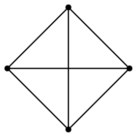
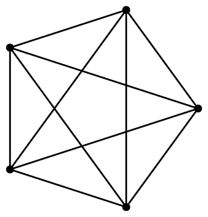
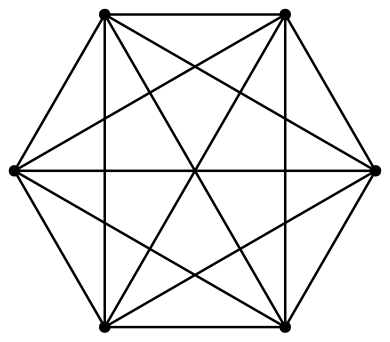
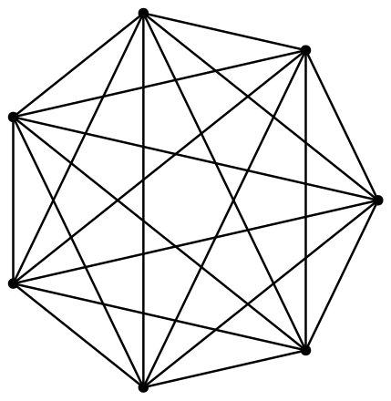

@inponomarev
Ivan Ponomarev, Synthesized.io/MIPT
One program — many simultaneous threads
Why do we need Concurrency at all?
— For performance, to make things quickly!
Many CPU cores, the computational task is divided into subtasks well.
Subtasks are blocked on I/O, you can wait for multiple replies in parallel or do something useful.
You need to respond to the request quickly and give a detailed answer later (user interface).
Multi-user service (each request runs in its own thread).
CPU-bound task will not be solved faster if there are more threads than cores.
The task is poorly parallelized (limited by a non-divisible resource).
We are limited by Amdahl law.
α is the proportion of calculations that must be performed sequentially,
N — number of simultaneously executed threads,
S — the resulting speedup.
Bottom line: If the shared work is 80%, you won’t get more than a fivefold increase in performance due to parallelization.
\[\Large
N = 4, E = 6\] | \[\Large
N = 5, E = 10\] | \[\Large
N = 6, E = 15\] | \[\Large
N = 7, E = 21\] |
 |  |  |  |
Uiversal Scalability Law, a semi-empirical generalization of Amdahl’s law
β is a parameter that defines cohesion (inter-thread coordination)
fits well on empirical data
Before embarking on the slippery slope of multithreaded programming, consider:
Is this necessary to solve the problem?
How many threads do you need?
You have been warned.
class CalcSquare extends Thread {
final int argument;
int result;
CalcSquare(int argument) {
this.argument = argument;
}
@Override
public void run() {
//"complex" calculations
result = argument * argument;
}
}NB: in real world you will not use the Thread API
CalcSquare t1 = new CalcSquare(2);
CalcSquare t2 = new CalcSquare(3);
t1.start();
t2.start();
t1.join();
t2.join();
System.out.printf("%d, %d%n", t1.result, t2.result);
//otput: 4, 9
|
class DumbCounter {
int count;
void increment(){
count++;
}
}
DumbCounter c1 = new DumbCounter();
IntStream.range(0, 1000000).forEach(i->c1.increment());
DumbCounter c2 = new DumbCounter();
IntStream.range(0, 1000000).parallel().forEach(i->c2.increment());
System.out.printf("%d, %d%n", c1.count, c2.count);
//1000000,??????class DumbWayToFallAsleep implements Runnable {
private boolean asleep;
public void setAsleep(boolean asleep){
this.asleep = asleep;
}
@Override
public void run() {
while (!asleep){
//countSomeSheep
//WILL WE FALL ASLEEP?
}
}
}class PossibleReordering {
static int x = 0, y = 0, a = 0, b = 0;
public static void main(String... args)
throws InterruptedException {
//another method of starting a thread (you won't use it as well)
Thread one = new Thread(() -> {
a = 1; x = b;
});
Thread two = new Thread(() -> {
b = 1; y = a;
});
one.start(); two.start();
one.join(); two.join();
System.out.printf("%d,%d", x, y);
//??,??
}
}Thread one = new Thread(() -> {
a = 1; x = b;
});
Thread two = new Thread(() -> {
b = 1; y = a;
}); x y a b
a = 1; 0 0 1 0
x = b; 0 0 1 0
b = 1; 0 0 1 1
y = a; 0 1 0 0Thread one = new Thread(() -> {
a = 1; x = b;
});
Thread two = new Thread(() -> {
b = 1; y = a;
}); x y a b
b = 1; 0 0 0 1
y = a; 0 0 0 1
a = 1; 0 0 1 1
x = b; 1 0 1 1Thread one = new Thread(() -> {
a = 1; x = b;
});
Thread two = new Thread(() -> {
b = 1; y = a;
}); x y a b
a = 1; 0 0 1 0
b = 1; 0 0 1 1
x = b; 1 0 1 1
y = a; 1 1 1 1
or
y = a; 0 1 1 1
x = b; 1 1 1 1Due to reordering and other low-level features, it is impossible to reason about the result of one thread from the point of view of another thread as an intermediate result of the execution of the source code.
All problems with parallel computing are related to shared state.
The problems shown here are nondeterministic.
Any program with shared state access without proper synchronization is broken, even if "yesterday it worked on my machine".
int aVariable = 42;Java Memory Model (JMM) — A language and virtual machine specification that answers the question, "Under what conditions will a thread reading the 'aVariable' see a value of 42?"
JMM defines a partial order on all actions in a Java program, called happens before.
The happens-before relation is transitive: \(A \prec B \wedge B \prec C \Rightarrow A \prec C\)
For action B to be guaranteed to see the result of action A, it is sufficient that \(A \prec B\).
Within one thread, all actions happens before in the order of their definition in the source code of the program.
In other words, single-threaded programs are executed without surprises.
Calling threadA.start() happens-before all operations on the threadA.
Any operation on the threadA happens-before the detection of the completion of threadA by another thread, either by exiting threadA.join() or by checking threadA.isAlive() == false.
Due to this rule, our very first example works correctly.
volatile keywordClass variables can be defined with the volatile keyword.
Writing to a volatile variable happens-before reading from this variable on another thread.
This automatically makes changes in all the other variables visible. Relying on this is not recommended: it works, but it makes the code fragile. In the process of refactoring, you can change the order of access to variables and thereby accidentally break the program.
class NotSoDumbWayToFallAsleep implements Runnable {
private volatile boolean asleep;
public void setAsleep(boolean asleep){
this.asleep = asleep;
}
@Override
public void run() {
while (!asleep){
//countSomeSheep
//...
}
}
}final fieldsIf the object is correctly published, i.e. if reference to this does not leak from constructor — final fields of the object are available to all the threads without synchronization.
The best way to deal with mutable state problems is to use immutable state wherever possible.
(We can declare | (By the way, a |
//Reentrant is so called because
//the same thread is allowed to enter again
private ReentrantLock bankLock = new ReentrantLock();
void moneyTransfer(int from, int to, int amount) {
bankLock.lock();
try {
accounts[from]-=amount;
accounts[to]+=amount;
} finally {
bankLock.unlock();
}
}Did you asked yourself: “where is the guarantee that after the exit from blocking, the thread will see the result of the work of the previous thread?” If you did, then you had begun to understand something.
Unlocking happens before another locking of the same lock.
Therefore, lock-protected variables should no longer be declared as volatile.
while (accounts[from] < amount) {
//wait ....
}
bankLock.lock();
try {
transfer funds ...
} finally {
bankLock.unlock();
}Access to accounts[from] is not synchronized, but even if it were synchronized, someone would be able to reduce the amount of money before entering the transfer funds block.
bankLock.lock();
try {
while (accounts[from] < amount) {
wait ....
}
transfer funds ...
} finally {
bankLock.unlock();
}We have acquired bankLock and are waiting for someone to top up the account. But no one will ever be able to do it, because bankLock is locked by us.
private ReentrantLock bankLock = new ReentrantLock();
private Condition sufficientFunds = bankLock.newCondition();
void moneyTransfer(int from, int to, int amount) {
bankLock.lock();
try {
while (accounts[from] < amount)
sufficientFunds.await();
accounts[from]-=amount;
accounts[to]+=amount;
sufficientFunds.signalAll();
} finally {
bankLock.unlock();
}
}await() releases the lock and puts the thread into a waiting state,
signalAll() signals to all waiting threads that something has changed,
exiting await() acquires the lock again.
When exiting await() we check the condition again because:
the signal could be sent for another reason,
"spurious wakeups" are possible.
How is it guaranteed that when we leave await() we will see changes made by another thread?
When exiting await() we capture the lock again, the JMM Monitor Lock Rule is working.
while (!okToProceed())
condition.await();Starting with Java 1.0, every object has an intrinsic lock.
Each intrinsic lock has one condition.
//enter intrinsic lock on *this*
synchronized void moneyTransfer(int from, int to, int amount) {
while (accounts[from] < amount)
wait(); //wait on intrinsic object's lock condition
accounts[from]-=amount;
accounts[to]+=amount;
notifyAll(); //notify all threads waiting on the condition
}synchronized blockAnother form of using intrinsic locks:
private Object lock = new Object();
void moneyTransfer(int from, int to, int amount) {
synchronized (lock) {
while (accounts[from] < amount)
lock.wait();
accounts[from]-=amount;
accounts[to]+=amount;
lock.notifyAll();
}
}It is necessary to follow the strict pattern:
synchronization,
while-loop wait,
notification.
You need to keep in mind:
the object whose intrinsic lock we are capturing,
the object whose condition we use for waiting,
threads waiting on which condition we notify (it all should relate to the same object).
In general, this is a low-level and complex mechanism. Its understanding will be useful during job interviews, but most likely, you will not need to use it.
Where possible, use immutable state: it is automatically thread-safe.
Use volatile variables or synchronization to access mutable state.
Hold the lock while performing operations that should be atomic.
To reiterate: a program with a shared mutable state without proper synchronization is a broken program.
Think about thread safety all the time.
JMM understanding helps
class LeftRightDeadlock {
private final Object left = new Object();
private final Object right = new Object();
void leftRight() {
synchronized (left) {
synchronized (right) {
doSomething();
}
}
}
void rightLeft() {
synchronized (right) {
synchronized (left) {
doSomethingElse();
}
}
}
}void transferMoney(Account fromAccount, Account toAccount,
int amount) throws InsufficientFundsException {
synchronized (fromAccount) {
synchronized (toAccount) {
if (fromAccount.getBalance() < amount)
throw new InsufficientFundsException();
else {
fromAccount.debit(amount);
toAccount.credit(amount);
}
}
}
}If function captures more than one lock, deadlock is possible.
To avoid deadlocks, you need to make sure that the locks are always captured in the same order. Sometimes it’s not obvious how to do it.
If you have captured a lock — finish with it as quickly as possible, do not call external methods.
Locking (via synchronized or ReentrantLock) solves the issue of coordinating the actions of different threads with a variable.
But if many threads compete for the lock (high lock contention), the cost of coordinating the threads becomes significant.
The alternative is non-blocking algorithms that use special atomic machine instructions (compare-and-swap).
In the Java library, classes of atomic variables and thread-safe collections are available, including those implementing non-blocking algorithms.
package java.util.concurrent.atomic
AtomicBoolean, AtomicInteger, AtomicLong, AtomicReference.
AtomicIntegerArray, AtomicLongArray, AtomicReferenceArray.
Can be used as "enhanced volatiles", as the result of calling set(…) is visible to other threads via get(…)
Support atomic operations.
getAndSet(newValue) compareAndSet(expect, update)
incrementAndGet() decrementAndGet()
getAndIncrement() getAndDecrement()
getAndAdd(delta) addAndGet(delta)
getAndUpdate(updateFunction)
updateAndGet(updateFunction)
getAndAccumulate(x, accumulatorBiFunction)
accumulateAndGet(x, accumulatorBiFunction)In earlier versions of Java, it was possible to "make" a collection thread-safe by wrapping it in Collections.synchronizedXXX(…). This serialized any access to the internal state of the collection. Because of backward compatibility support, doing this is still possible, but not recommended.
The price of such a solution is high lock contention.
Version 5 introduces classes specifically designed for thread safety, with fewer locks.
Their use is preferred.